Designing worlds worth staying in


Creating
trend-driven
social content
- UI/UX
- Visual
- Branding
- Web
- AI


PORTFOLIO JIWON SEO
3D 회전
#


Banner & Campaign
TEAM PROJECT
PERSONAL PROJECT
Visual & experience design
Designing worlds worth staying in
VIEW MORE
PERSONAL PROJECT
PERSONAL PROJECT
PERSONAL PROJECT
Core strengths and expertise
Creating
trend-driven
social content


Key proficiencies
TEAM PROJECT
TEAM PROJECT
PERSONAL PROJECT
#PORTFOLIO JIWON SEO
PROJECT 01
Personal Project
스크롤만으로 귀혼의 세계를
탐험하는 인터랙티브 웹 경험
PROCESS INDEX
프로젝트 상세 보기
다음 프로젝트로 이동
PROJECT 02
Team Project
소비를 게임처럼
절약을 습관으로 만드는 모바일 서비스
PROCESS INDEX
프로젝트 상세 보기
다음 프로젝트로 이동
PROJECT 03
Personal Project
유미의 세포들 세계관을 한곳에
담아낸 팬 아카이브 플랫폼
PROCESS INDEX
프로젝트 상세 보기
다음 프로젝트로 이동
PROJECT 04
Team Project
문 너머, 또 다른 세계.
방탈출의 몰입을 그대로 옮긴
시네마틱 브랜드 웹 경험
PROCESS INDEX
프로젝트 상세 보기
다음 프로젝트로 이동
PROJECT 05
Team Project
저장소가 아니라, 학습 진입로.
탐색 → 선택 → 학습이 끊기지 않는
글로벌 수학 기출 학습 플랫폼
PROCESS INDEX
프로젝트 상세 보기
다음 프로젝트로 이동
PROJECT 06
Personal Project
아이돌의 세계를 한 장면으로.
플레디스 엔터테인먼트의 아티스트를
담아낸 브랜드 비주얼 프로젝트
PROCESS INDEX
프로젝트 상세 보기
다음 프로젝트로 이동
PROJECT 07
Personal Project
브랜드 아이덴티티부터 커머스 경험까지
구축한 뷰티 플랫폼
PROCESS INDEX
프로젝트 상세 보기
다음 프로젝트로 이동
PROJECT 08
Personal Project
선택이 누군가의 노래가 된다.
랜딩에서 클릭하면 바로 플레이되는
멀티엔딩 오토메 비주얼노벨
PROCESS INDEX
프로젝트 상세 보기
다음 프로젝트로 이동


OVERVIEW
작심삼일 가계부, 광고만 보게 되는 앱테크,
결국 오래 남는 건 없었습니다.


DESK RESEARCH
고물가 시대와 소비 중심 문화 속에서 MZ세대는
‘돈을 아껴야 한다’는 압박을 느끼고 있습니다.
하지만 기존 절약 서비스들은 기록과 통제 중심의 UX가 많고,
지속적으로 사용하게 만드는 동기는 부족합니다.

 01
01
“재미와 보상이
부족해서”
68%
지속 가능한 절약 경험을 위한
동기부여 구조 필요
02
실생활 기반
절약 챌린지 필요
03
단순 기록보다
지속 사용 경험 중심 설계 필요
PROJECT GOAL
자린고비는 단순한 가계부 앱이 아니라
절약 행동을 게임처럼 지속할 수 있도록 설계한 챌린지형 캐릭터 성장 서비스입니다.
Solution 1
배달 대신 집밥, 카페 대신 텀블러처럼
일상 속에서 실천 가능한 절약 미션 제공
Solution 2
절약 행동이 쌓일수록 포인트로 보상받고,
캐릭터가 성장하는 구조 설계
Solution 3
절약 정보 공유, 인증 챌린지,
유저 간 반응 시스템을 통해
꾸준히 참여하게되는 구조 설계

GOAL
절약 행동이 즐거운 습관이 되는
생활형 절약 게이미피케이션 서비스
PERSONA
기존 절약 서비스와 사용자 소비 패턴을 분석하며
핵심 타겟의 특징과 니즈를 정리했습니다.

김민지 24세 · 취준생
“돈은 모아야 하는데
매일 절약하기 힘들어요”

Pain Point
절약 정보는 많은데
실천이 어려움
금방 포기하게 됨

성준우 27세 · 직장인
“가볍게 사용하는
소비습관을 바꾸고 싶어요”

Pain Point
성과가 눈에 안보임
혼자 하면
의지가 약해짐
FLOW CHART
사용자가 챌린지를 선택하고 절약을 실천하면,
인증과 보상을 통해 캐릭터가 성장하고 다음 챌린지로 이어지는 선순환 구조입니다.
01사용자 맞춤
챌린지 추천
02오늘의 절약
미션 확인
03실천 인증 완료
04아낀 자산 확인
포인트 획득
05다음 챌린지
참여로 루프 반복
DEVELOPMENT ISSUE
실제 서비스 구현 과정에서 발생한 이슈를 분석하고
구조 개선 및 사용자 경험 최적화를 진행했습니다.


VISUAL CONCEPT
자린고비는 부담스럽고 어려운 절약이 아닌,
작은 실천을 즐겁게 이어가는 경험을 만들고자 했습니다.
BRAND OBJECT
전래동화 ‘자린고비’ 속 천장에 매달린
조기 이야기에서 영감을 받아
브랜드 오브젝트를 제작했습니다.
작은 절약을 유쾌하게 이어가는
서비스의 정체성을 담고 있습니다.
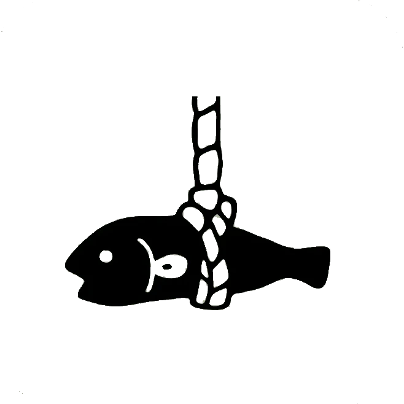
TYPO
손글씨 느낌의 둥근 서체를 사용해
생활형 절약 서비스의 친근한 분위기를 표현했습니다.
타이틀과 주요 인터랙션 영역에 활용하여
자린고비만의 유쾌한 브랜드 감성을 강조했습니다.
COLOR


자린이는 앱을 넘어,
사용자의 일상 속에 함께하는 친근한 브랜드가 되고자 합니다.


01 CHALLENGE
배달 대신 집밥, 텀블러 사용하기처럼
실생활 속에서 바로 실천 가능한
절약 챌린지를 제공했습니다.


02 GROWTH
절약 행동으로 획득한 포인트를 통해
자린이를 성장시키고 꾸미기 아이템을 사용할 수 있어요.


TOOLS


ROLE
TIME

2026.04.22
–
2026.05.06


 poze
in everyday life
poze
in everyday life

POZE was created
for quiet moments.
Not for fast scrolling,
but for slow immersion.
 BRAND MOOD
EDITORIAL FLOW
QIET INTERACTION
BRAND MOOD
EDITORIAL FLOW
QIET INTERACTION
빛과 여백, 부드러운 분위기를 통해
브랜드의 공기감을 표현했습니다.
이미지와 여백의 흐름을 통해
브랜드의 분위기가 자연스럽게 이어지도록 구성했습니다.
부드러운 움직임과 전환을 통해 사용자의 몰입감을 유지했습니다.
POZE is a beauty brand that captures quiet moments
and delicate emotions. We communicate the essence of beauty
through minimal design and thoughtful details.
The Glow Primer

브랜드의 분위기와 흐름을 온전히 담기 위해
독립 구조로 다시 설계했습니다.
크림톤이 섞인 베이지 컬러를 사용해
부드럽고 조용한 무드를 표현했습니다.
채도를 낮춘 더스티 로즈를 사용해
여성스러움과 감각적인 분위기를 표현했습니다.
붉은 기가 은은하게 섞인 브라운 톤을 사용해
부드러운 긴장감이 유지되도록 표현했습니다.


기획부터 구현까지 연결하는 디자이너
서지원입니다.
DESIGN
DEVELOPMENT
AI TOOLS
사용자 중심의 경험 설계와 인터페이스 디자인
브랜드 아이덴티티 기획 및 디자인
웹 퍼블리싱 및 인터랙션 구현
콘텐츠 제작 자동화 및 AI 활용 워크플로우 구축
BEAUTY CONTENT LAB / 01 OVERVIEW
카드뉴스 기반 콘텐츠를 4개 채널로 확장하며
콘텐츠 기획, 제작, 업로드, 성과분석까지 직접 운영 했습니다.

빠르게 소비되는 SNS 안에서
저장하고 다시 보고 싶은 뷰티 콘텐츠를 실험했습니다.
BEAUTY CONTENT LAB / 02 SYSTEM
콘텐츠 운영 프로세스


주제 선정 및 기획
AI 리서치 활용
콘텐츠 제작
AI 초안 + 검수
플랫폼별 포맷 최적화
채널별 재가공
업로드 및 운영
직접 운영
인사이트 도출
AI 분석 보조

릴스 중심 운영
카드뉴스 이미지를 이어붙여
릴스 영상 형태로 재가공
짧은 영상 흐름에 맞게
표지·순서·자막감을 조정해 업로드

TikTok
카드형 콘텐츠
카드뉴스 포맷을 그대로 활용해
사진 슬라이드 형태로 업로드
별도 영상 편집 없이도
빠르게 소비되는 카드형 콘텐츠로 운영

YouTube
쇼츠 영상 변환
카드뉴스를 영상으로 이어붙여
YouTube Shorts에 맞게 제작
짧은 정보 전달 흐름에 맞춰
이미지 순서와 타이밍을 조정

Naver Blog
AI 기반 글 확장
완성된 카드뉴스를 Gemini Gems에 입력
내 말투의 블로그 글로 자동 확장
카드뉴스 내용을 검색형 글 콘텐츠로 바꿔
블로그 유입까지 연결

하나의 카드뉴스를 플랫폼 특성에 맞게 재가공해
4개 채널로 확장하는 운영 구조를 만들었습니다.
One Source Content · Multi-formal Expansion · AI-assisted Workflow
BEAUTY CONTENT LAB / 03 EXPERIMENT
하나의 카드뉴스를 플랫폼별 소비 방식에 맞게 변환하기
같은 원본 콘텐츠를 여러 플랫폼에 운영하며
효과적인 방식과 개선점을 실험하고 운영 전략을 조정했습니다.
단순히 여러 채널에 업로드하는 것이 아니라,
각 플랫폼에서 어떤 방식이 더 적합한지 비교하며 운영 방식을 조정했습니다.

인스타그램과 유튜브 쇼츠는 카드뉴스 이미지를
이어붙여 짧은 영상 형태로 재가공했습니다.
촬영 없이도 콘텐츠 확장이
가능했지만, 영상 전용 콘텐츠보다
몰입감은 조정이 필요했습니다.

틱톡은 카드뉴스를 사진 슬라이드 형태로
업로드하고, 인스타그램과 유튜브는
영상형으로 변환해 운영했습니다.
같은 원본 콘텐츠라도
플랫폼의 소비 방식에 따라
전달 방식이 달라져야 했습니다.
주제 리서치, 초안 구성, 블로그 글 확장,
성과 분석 보조에 AI를 활용했습니다.
AI는 콘텐츠를 완성하는 도구보다
반복 작업을 줄이고 운영 속도를
높이는 도구에 가까웠습니다.
BEAUTY CONTENT LAB / 04 RESULT
하나의 카드뉴스를 플랫폼별 소비 방식에 맞게 변환하기
카드뉴스 기반 콘텐츠를 4개 채널로 확장한 결과,
숏폼 플랫폼에서 높은 도달과 조회 성과를 확인했습니다.
카드뉴스는 단일 콘텐츠로 끝나는 것이 아니라
숏폼,블로그,검색형 콘텐츠로 확장 가능한 운영 자산이 될 수 있었습니다.
도달 계정
10,267
+1,423.3%
TikTok
조회수
93K
+818.7%
YouTube Shorts
조회수
41K
+131% (4월 대비)
Naver Blog
전체 방문자 수
16,304
+311%(5월)
채널별 성과 화면


TikTok

YouTube

Blog
타겟 도달 인사이트
89.4%
여성 타겟 중심 반응
뷰티 콘텐츠의 핵심 타겟인
10~30대 여성 사용자 도달 가능성을 확인했습니다.


AI CONTENT LAB / 01 OVERVIEW
AI 콘텐츠 포맷을 실험하고
플랫폼별 반응을 검증했습니다.
AI asmr과 카드뉴스 포맷을 인스타그램 · 틱톡에서 실험하며
플랫폼별 콘텐츠 반응 차이를 검증했습니다.

AI CONTENT LAB / 02 EXPERIMENT JOURNEY
AI 콘텐츠 계정은 하나의 방식 운영한 것이 아니라,
콘텐츠 포맷을 바꿔가며 플랫폼별 반응과 제작 효율을 실험했습니다.
시각적 몰입감이 강한 AI ASMR 콘텐츠를 제작해 Instagram과 TikTok에서 반응을 비교했습니다.

시각적 자극이 강한 콘텐츠가
짧은 조회 시간 내 높은 반응을 얻음
정보형 콘텐츠로 포맷을 전환하고, Python 기반 자동화로 카드뉴스 제작 구조를 시스템화했습니다.

자동화 제작으로
콘텐츠 생산 속도와 일관성 개선
콘텐츠 기획부터 카드뉴스 디자인까지 AI를 활용해 반복 제작 가능한 구조를 실험했습니다.

기획+디자인 자동화로
정보 전달력과 제작 효율 확보

AI CONTENT LAB / 03 PLATFORM RESPONSE
AI ASMR, 카드뉴스, 정보형 콘텐츠 등
다양한 포맷을 Instagram과 TikTok에 함께 운영하며,
조회수, 유입 경로, 추천 피드 반응을 비교했습니다.
시각적 몰입감이 강한 ASMR 콘텐츠가
탐색 탭과 비팔로워 유입에서 반응이 좋았습니다.


정보형 카드뉴스 콘텐츠가
추천 피드에서 빠르게 확산되었습니다.


같은 AI 콘텐츠라도 플랫폼마다 반응하는 포맷이 달랐고,
자동화는 제작 속도를 높이며 빠른 검증에 도움이 되었습니다.
8 banners · 일반 배너 디자인 모음
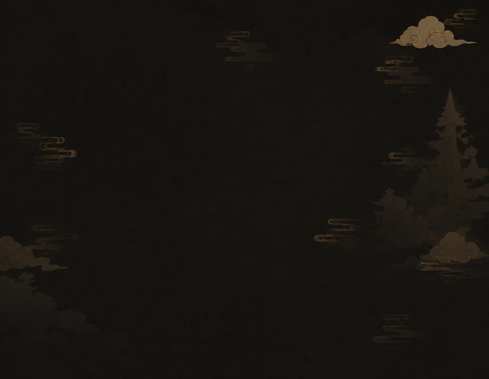
귀혼M의 세계관을 스크롤로 체험하는 풀페이지 프로모션 웹사이트
게임 정보를 나열하는 페이지가 아니라, 게임을 시작하기 전의 감정을 만드는 웹 경험을 설계했습니다.
귀혼은 SD 캐릭터 · 요괴 · 무협 세계관 · 혼 시스템처럼 시각적으로 강한 요소를 가진 게임입니다.
하지만 기존 웹사이트는 정보 전달 중심에 가까웠고, 첫 화면에서 분위기와 플레이 기대감을 충분히 전달하지 못했습니다.
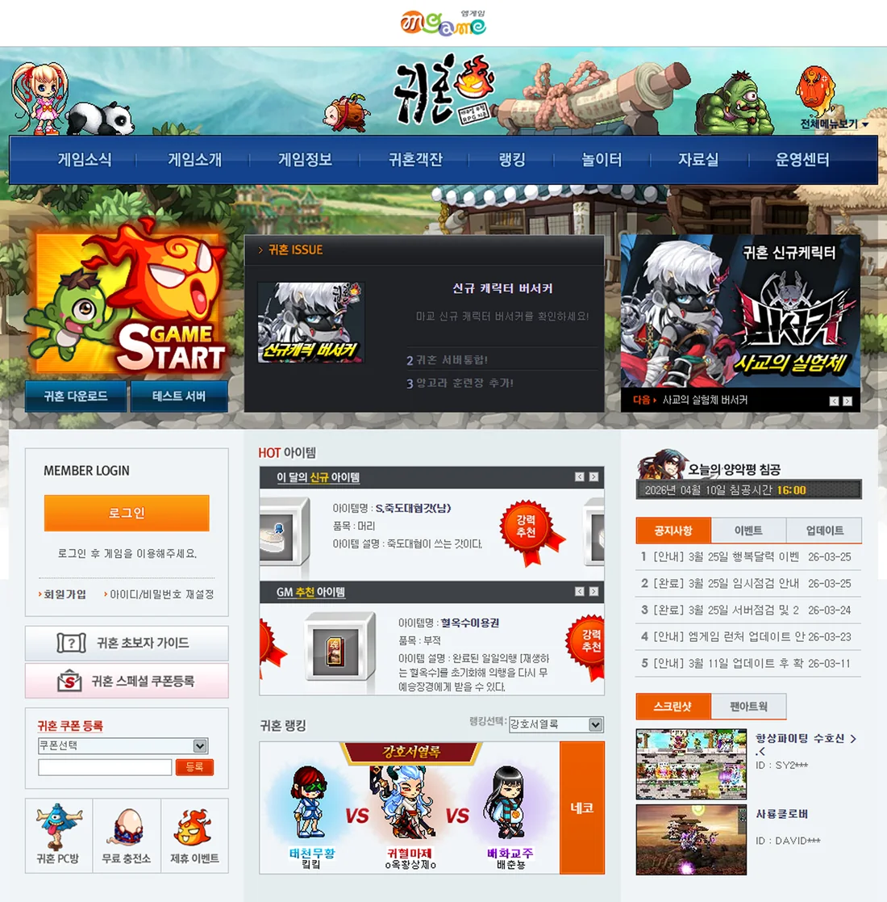
핵심 콘텐츠와 CTA의 위계가 약해,
무엇을 먼저 봐야 하는지 명확하지 않았습니다.
무협 · 요괴 · 캐주얼 · MMORPG 감성이
웹 경험으로 전달되지 못했습니다.
신규 사용자를 위한 프로모션 경험이 없어,
콘텐츠를 효과적으로 전달하기 어려웠습니다.
플레이 전 기대감을 만드는
시각적 연출과 인터렉션이 부족했습니다.
그래서 목표는 단순한 리디자인이 아니라, 귀혼의 정체성을 웹에서 다시 경험하게 만드는 것이었습니다.
’동양 판타지 게임’으로만 보면 방향이 틀어집니다.
귀혼의 매력은 무협 세계관 뿐 아니라, 귀여운 캐릭터와 요괴, 캐주얼한 온라인 RPG 감성에 있었습니다.
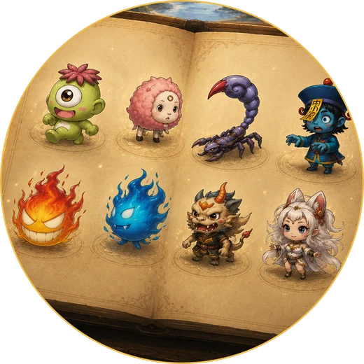
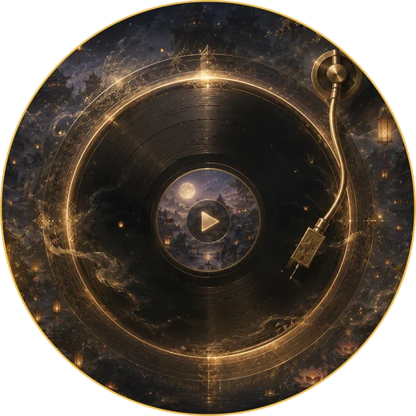
혼과 요괴가 공존하는
동양 판타지
각기 다른 전투 스타일
다양한 요괴를 수집하고
성장하는 재미
게임 감상을 완성하는
동양풍 사운드
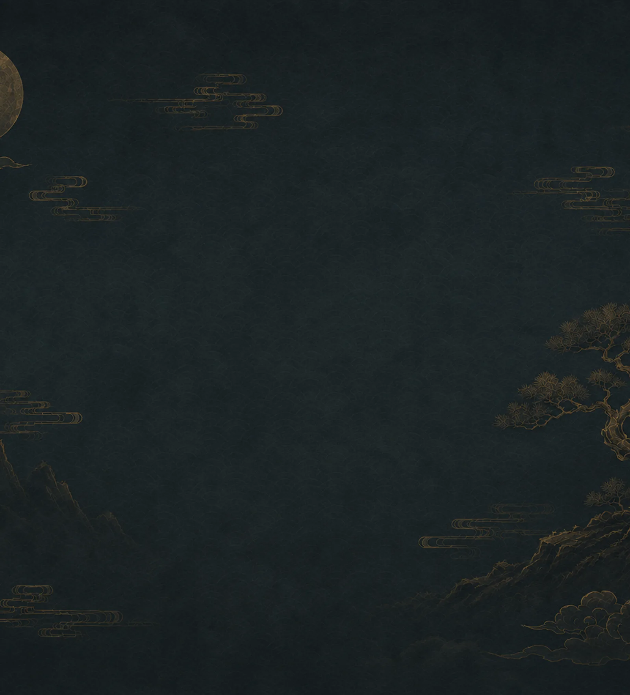
귀혼M을 어떻게 보여줄 것인지 고민하며 여러 형태의 시안을 제작했다.
정보 중심의 웹사이트부터 캐릭터와 콘텐츠를 강조한 구성까지, 방향을 탐색하며 최종 구조를 구체화했다.
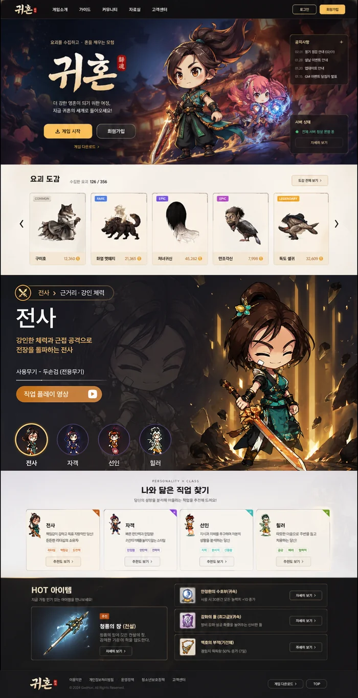
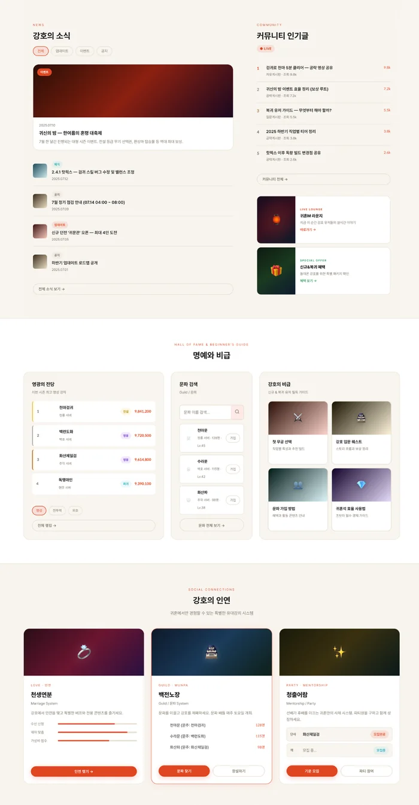
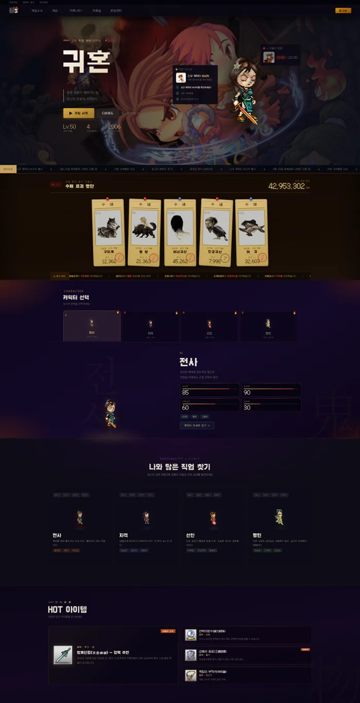
귀혼M에 필요한 것은 웹사이트가 아니라, 게임을 시작하고 싶게 만드는 경험이었다.
귀혼M은 단순히 정보를 확인하는 페이지가 아니라,
게임 속 세계로 들어가기 전 기대감을 만드는 공간이라고 생각했다.
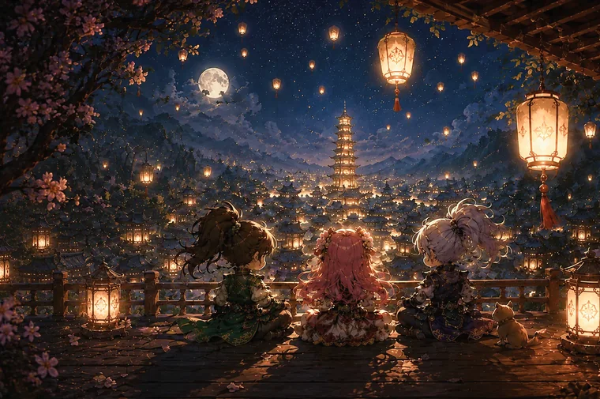
귀혼M의 다양한 콘텐츠를 단순히 나열하는 대신,
사용자가 스크롤을 내리며 게임의 핵심 재미를 순서대로 경험할 수 있도록 구성했다.
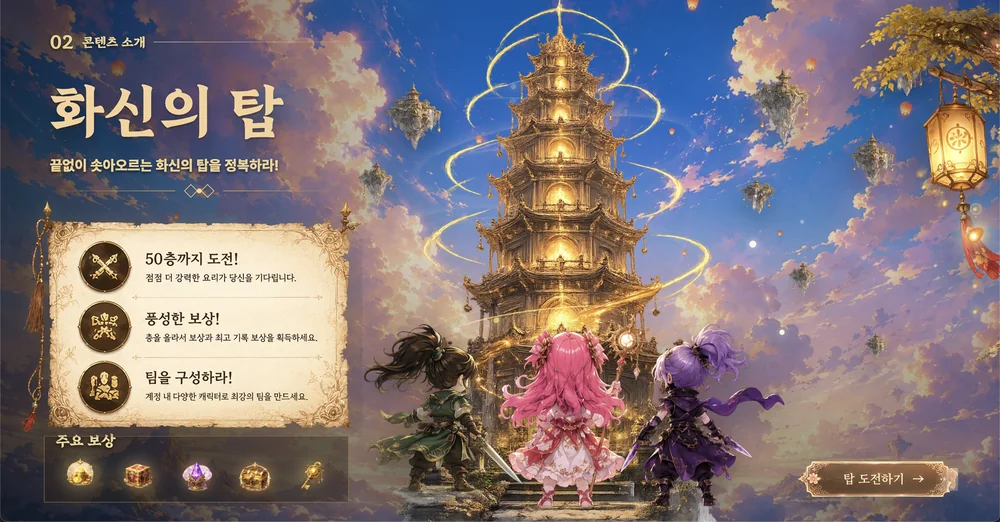
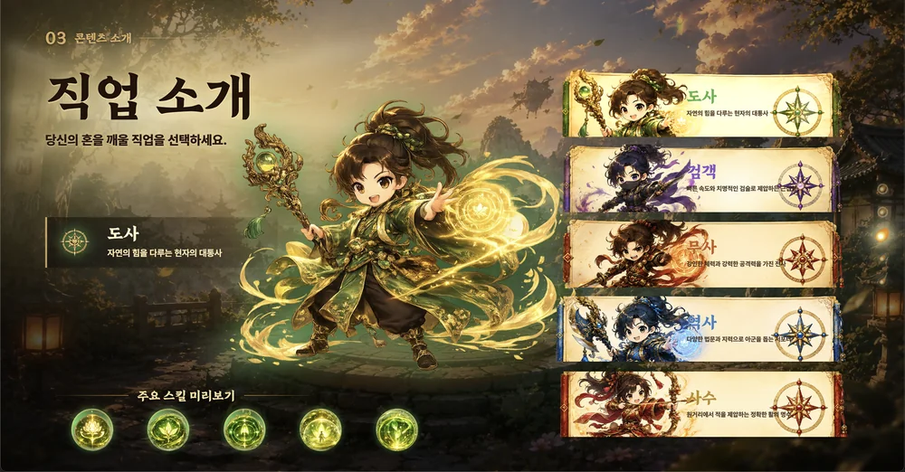
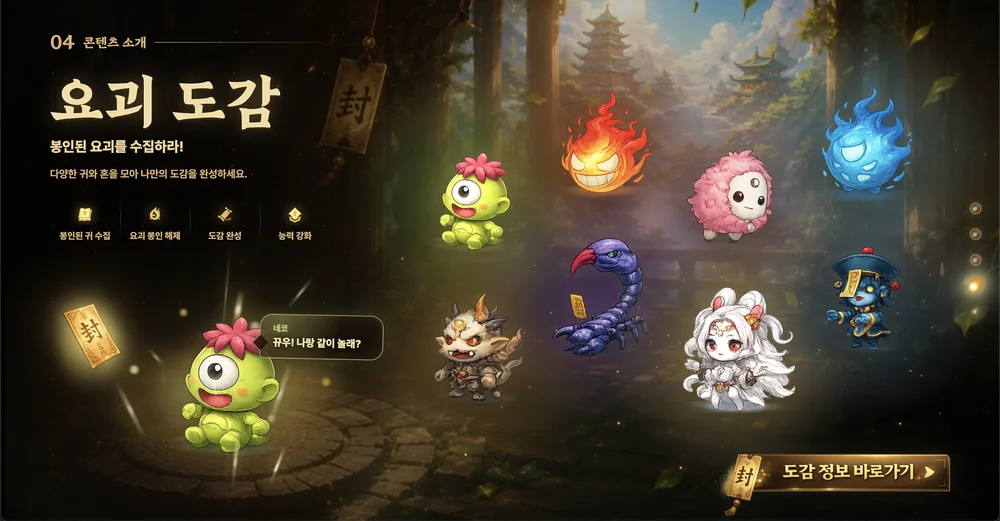
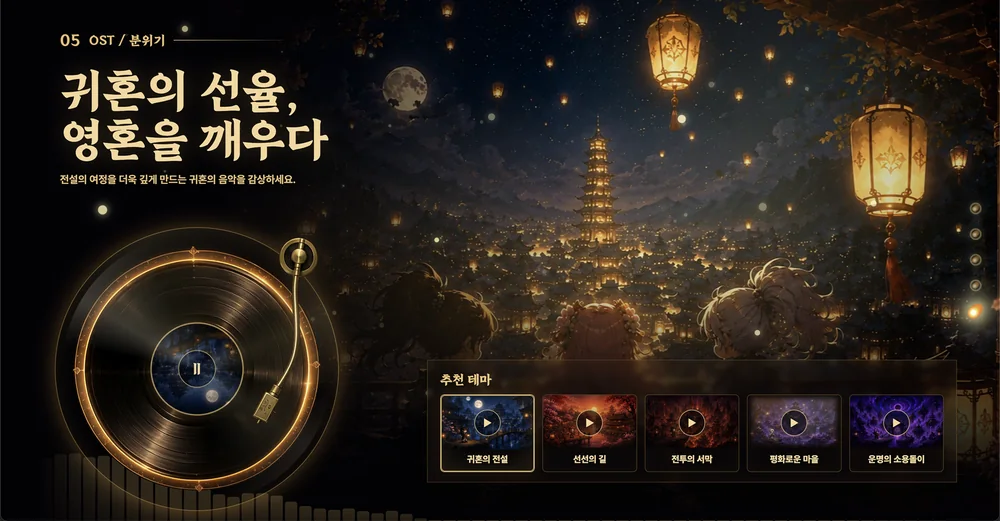
영상 배경과 캐릭터를 활용해
귀혼M의 세계관과 분위기를 전달했다.
게임을 시작하기 전 기대감이 먼저 전달되도록 구성했다.
프로모션 페이지의 핵심 콘텐츠로
신규 이벤트인 화신의 탑을 배치했다.
높이 솟은 탑과 보상 요소를 통해
도전과 성장의 재미를 직관적으로 전달하고자 했다.
직업별 무기, 스킬, 컬러를 다르게 구성해
플레이 스타일의 차이를 직관적으로 표현했다.
캐릭터 선택 후 스킬과 연출을 변경해보며
직접 탐색하는 재미를 제공했다.
요괴를 단순히 나열하는 대신
도감 시스템 자체를 경험할 수 있도록 구성했다.
사용자가 직접 요괴를 확인하며
수집 콘텐츠의 재미를 느낄 수 있도록 설계했다.
LP 플레이어 형태를 활용해
OST를 감성적으로 감상할 수 있도록 구성했다.
실제 음악 재생과 테마별 연출을 적용해
귀혼M의 세계관을 더욱 몰입감 있게 전달했다.
인터랙션은 단순한 시각 효과가 아니라,
사용자가 귀혼M의 콘텐츠를 직접 탐색하고 경험할 수 있도록 설계했다.
한 번의 스크롤이 아니라 하나의 장면이 되도록,
섹션 단위 전환으로 몰입감 있는 여정을 만든다.
첫 화면의 움직임으로 세계관에 대한 기대감을 높이고,
사용자의 시선을 자연스럽게 유도한다.
직업을 직접 살펴보고 선택하는 경험을 통해,
플레이 스타일을 미리 탐색할 수 있게 한다.
요괴 도감을 탐색하며 다양한 수집 요소를 발견하고,
게임 콘텐츠에 대한 호기심을 자극한다.
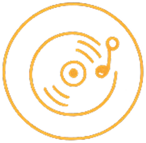
LP 플레이어를 통해 귀혼의 음악을 감상하고,
게임의 분위기와 감성을 오롯이 느낄 수 있다.
다양한 인터랙션과 애니메이션을 구현하는 과정에서 예상하지 못한 충돌과 이슈가 발생했다.
사용자가 의도한 경험을 안정적으로 느낄 수 있도록 구현과 개선을 반복했다.
직업 전환 시 캐릭터 위치가
순간적으로 이동하는 문제가 발생했다.
애니메이션 종료 후 transform 값을
초기화하는 방식으로 수정해 안정적인 전환이 가능하도록 개선했다.
이미지보다 애니메이션이 먼저 실행되어
콘텐츠가 자연스럽게 보이지 않았다.
이미지 로드 완료 이후
타임라인이 실행되도록 변경했다.
절대 위치 요소와 vh 단위 사용으로
모바일 환경에서 레이아웃이 깨졌다.
해상도별 미디어쿼리와 위치값을 재조정해
모든 디바이스에서 안정적으로 보이도록 개선했다.
섹션 이동 시 파티클 타이머가 누적되어
불필요한 리소스가 증가했다.
언마운트 시 interval과 observer를 정리하여
메모리 누수와 성능 저하를 방지했다.
다른 섹션으로 이동한 이후에도
음악이 계속 재생되는 문제가 발생했다.
IntersectionObserver를 활용해
섹션 이탈 시 자동으로 정지되도록 구현했다.
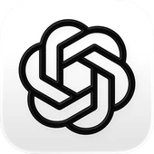
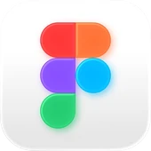
2026.05.13
-
2026.05.29
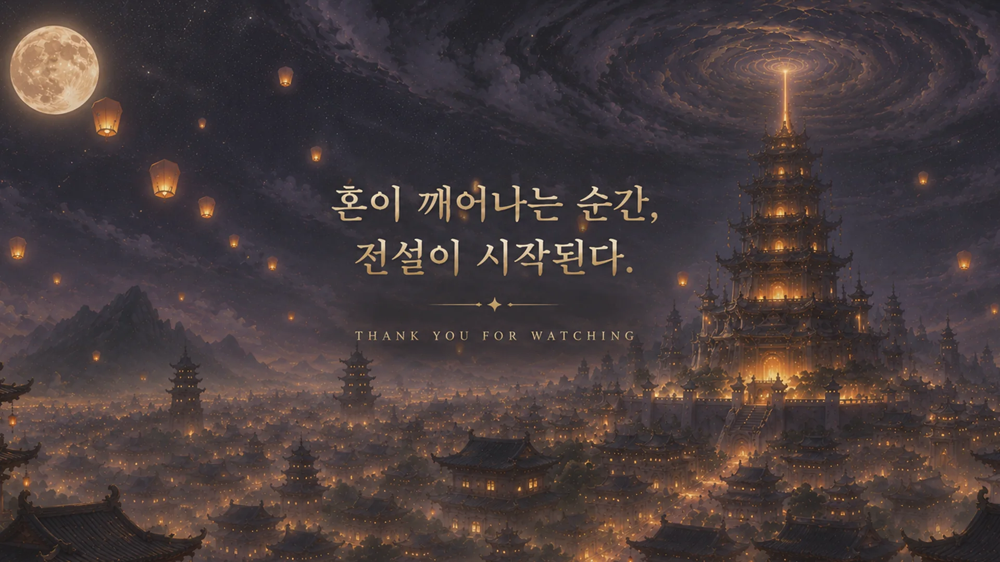
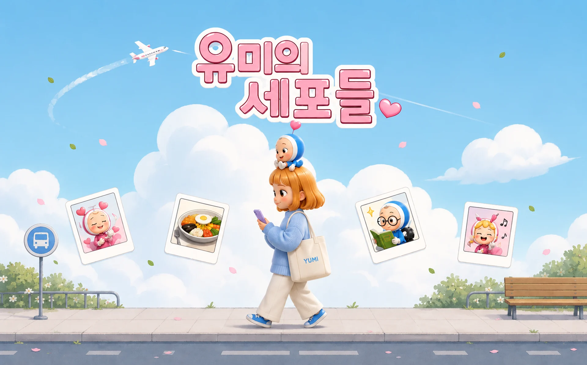
사람마다 이유는 다르지만, 유미의 세포들은 누구나 한 번쯤 겪어본 감정과 일상을 세포라는 캐릭터로 표현하며 깊은 공감을 만들어낸다.
이 프로젝트는 작품이 사랑받는 이유를 분석하고, 그 감성을 웹 경험으로 재해석하는 것에서 시작했다.
유미의 세포들은
우리의 평범한 일상을
가장 솔직하게 보여준다.
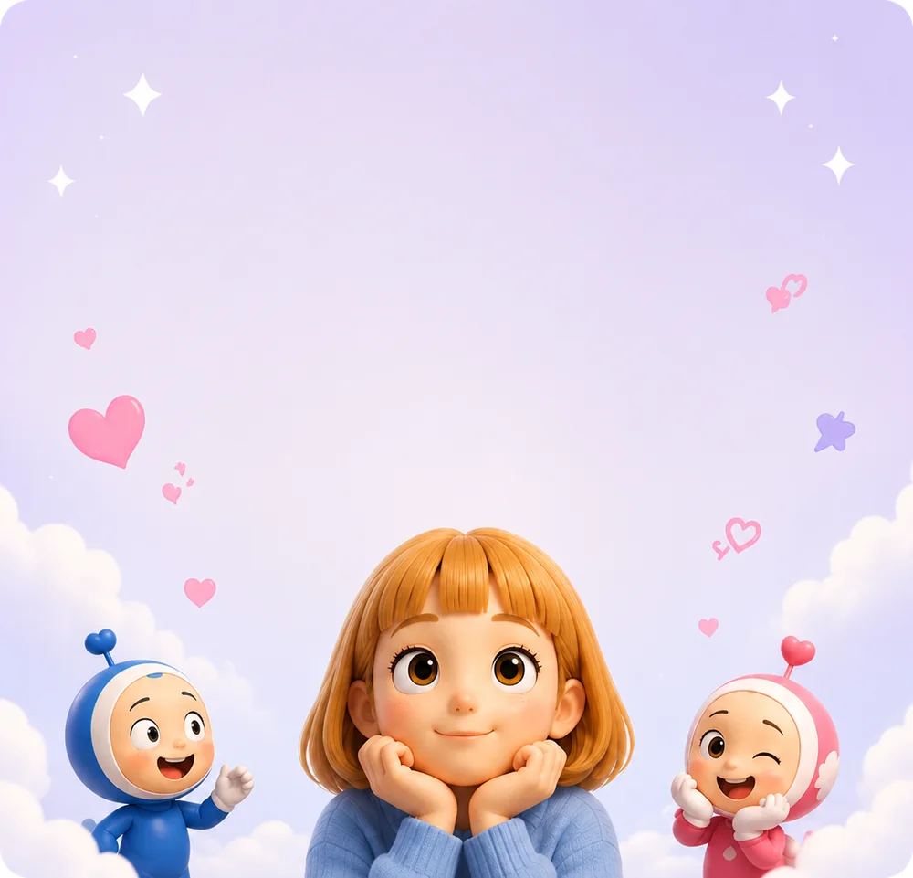
WHY WE LOVE YUMI’s CELLS사람마다 다르지만,
결국 이 작품은
’내 이야기 같다’
라는 감정을 남긴다.
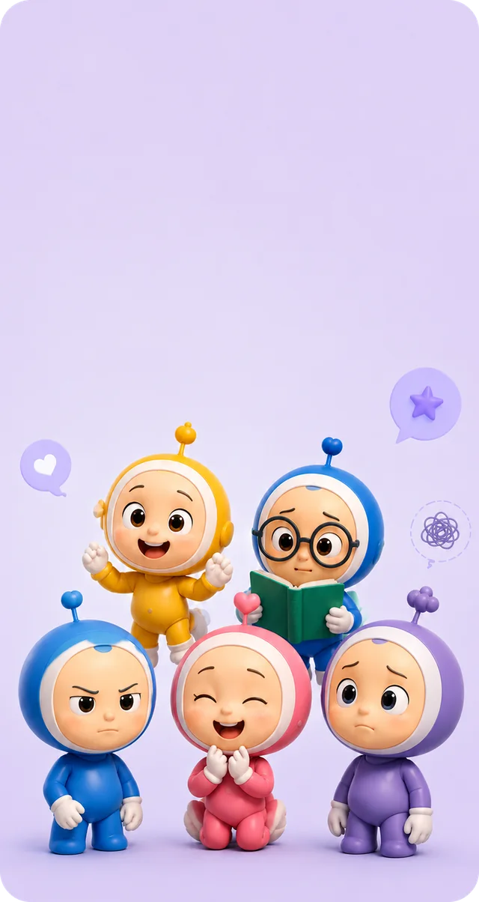
02 캐릭터사랑세포, 이성세포, 불안세포 등
각자의 역할이 선명하게 기억된다.
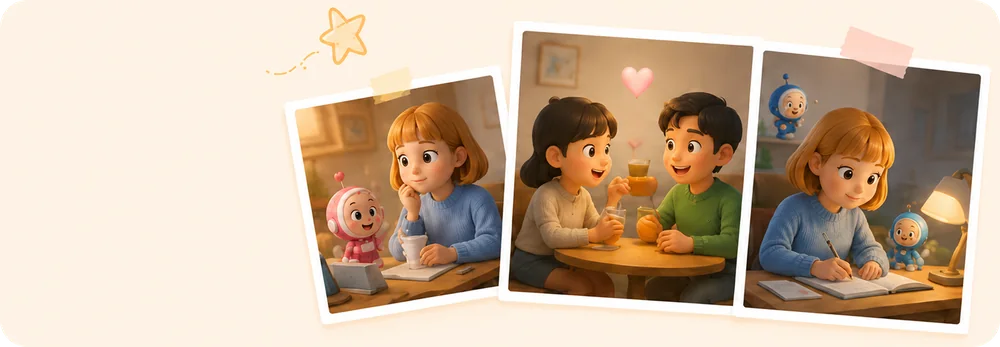
03 스토리누구나 겪는 이야기라
더 오래 기억된다.
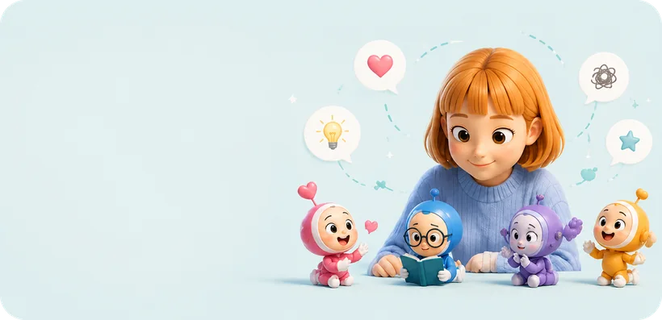
04 감정표현보이지 않는 마음을
눈앞에 보여주는 방식의 매력.
유미의 세포들은 보이지 않는 감정을 캐릭터와 이야기로 표현한다.
팬페이지 역시 단순한 정보 전달이 아닌, 색상과 모션을 통해 감정을 경험하도록 설계했다.
파스텔 컬러와 부드러운 인터랙션을 활용해 따뜻하고 몽환적인 분위기를 구축했다.
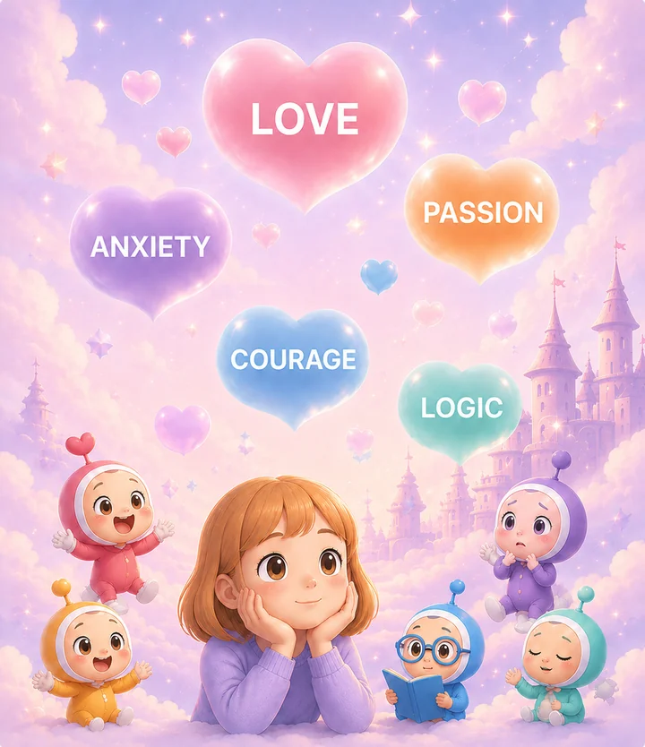
유미의 세포들 팬페이지는 단순히 메뉴를 나열하기보다,
사용자가 작품을 이해하고 → 감정에 몰입하고 → 콘텐츠를 더 탐색하는 흐름으로 구성했다.
메인 히어로에서 유미와 세포들을 크게 보여주어
첫인상부터 몰입감을 전달합니다.
캐릭터 → 스토리 → 콘텐츠로 이어지는 구조로
사용자가 원하는 정보를 쉽게 찾을 수 있습니다.
마지막 CTA를 통해 공식 채널과 팬 활동으로
자연스럽게 이어지도록 구성했습니다.
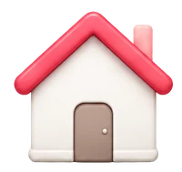
HOME유미와 세포들의 세계관을 한눈에 보여주는 메인 페이지
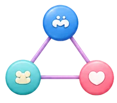
CHARACTER RELATIONSHIP유미, 세포들, 주변 인물들의 관계를 한눈에 볼 수 있는 페이지
유미의 세포들 드라마 시즌별로 바로 이동 할 수 있는 페이지
원작 네이버웹툰 ‘유미의 세포들’로 바로 이동 할 수 있는 페이지
작품 최신 소식
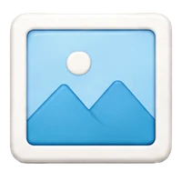
GALLERY작품 및 팬아트
유미의 세포들 세계관의 감성을 유지하면서,
사용자가 몰입할 수 있도록 자연스럽고 섬세한 인터렉션을 설계했다.
배경 · 유미 · 세포 · 패널의 레이어를 나누어
마우스 움직임에 따라 반응하도록 설계
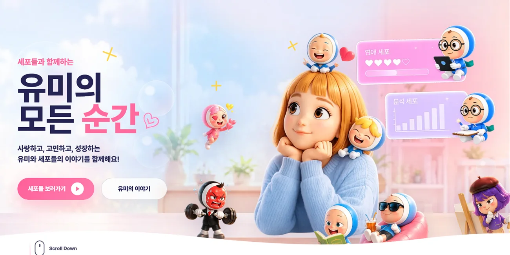
Layer 01 Layer 02 Layer 03 02 MOTION PRINCIPLE스크롤 흐름에 따라 자연스럽게
등장하고 몰입감을 높이는 모션 설계
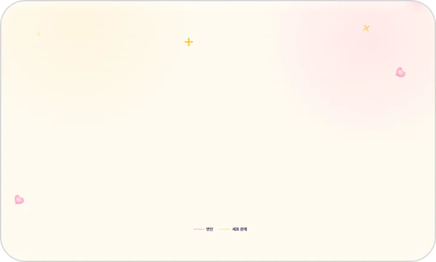
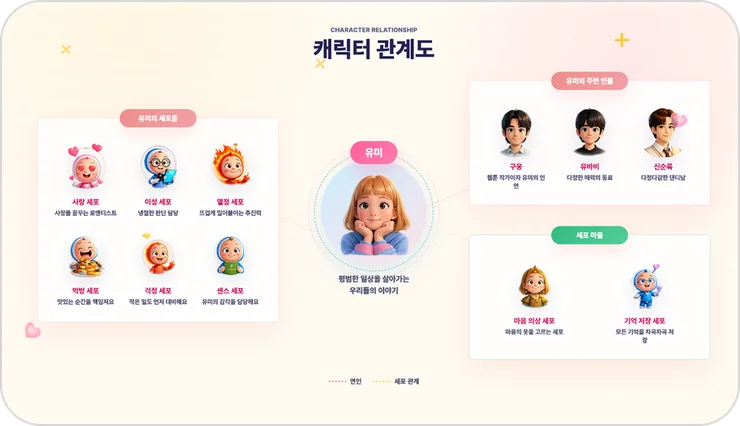
03 CUSTOM CURSOR하트 모양 커서를 적용하여
사용자가 사이트를 탐색하는 순간에도
유미의 세포들 감성을 유지한다.
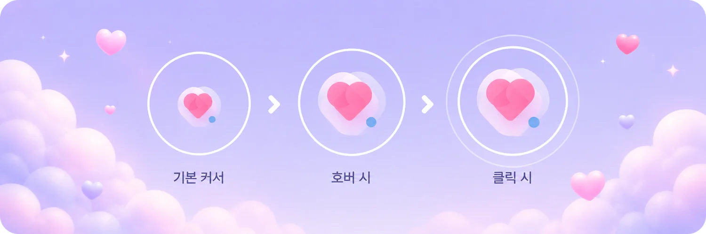
사용자 경험을 해치지 않으면서 유미의 세계관과 감성을
가장 잘 전달할 수 있는 방법을 고민하고, 디테일을 다듬어 완성도를 높였다.
콘텐츠 집중도가 높아지고
몰입감이 향상되었다.
콘텐츠 자체에 자연스럽게
집중할 수 있도록 개선되었다.
감정 표현이 직관적으로 전달되고
사용자 참여와 몰입도가 향상되었다.
사용자의 시선이 유미 → 콘텐츠
→ 탐색으로 이어지도록 정리했다.
좋아하는 작품을 웹으로 구현하는 과정에서
비주얼, 인터랙션, 구현 방식에 대해 고민하고, 사용자가 감정을 경험할 수 있는 방향을 탐색했다.
감정을 보여주는 것이 아니라,
감정을 느끼게 하는 웹을 만들고자 했다.
유미의 세포들이 전하는 감정을
웹 경험으로 자연스럽게 확장하는 것이 목표였다.
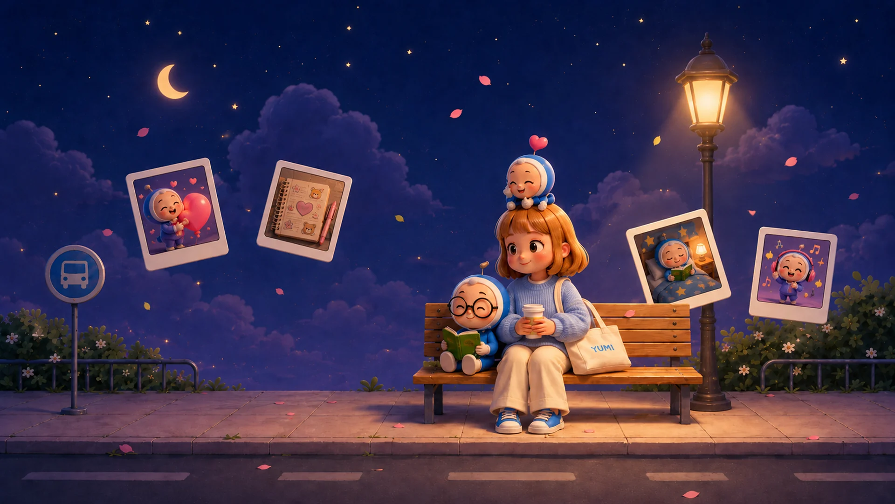
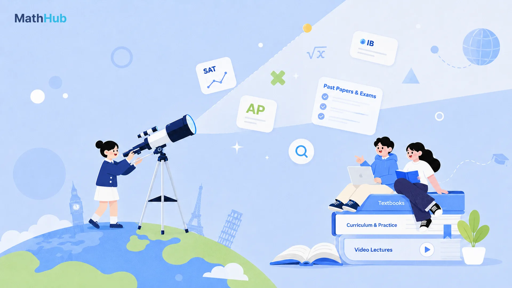
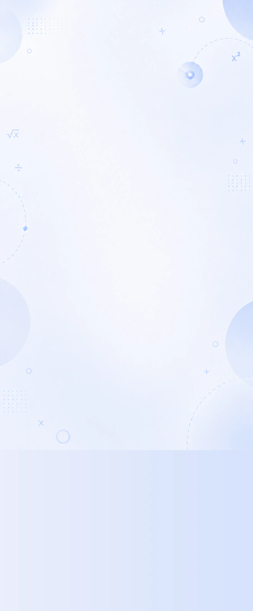
01 PROJECT OVERVIEW
MathHub는 다양한 수학 자료를 보유하고 있었지만,
사용자가 원하는 자료를 빠르게 찾고 학습 흐름으로 진입하기에는 정보 구조가 복잡했습니다
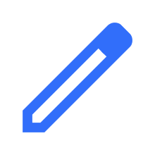
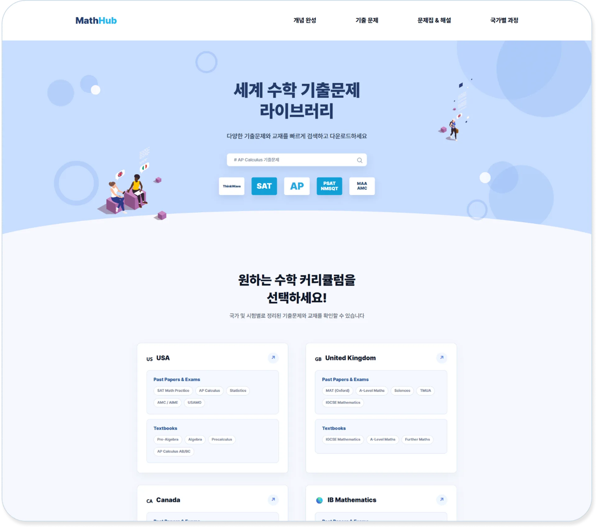
From archive
to learning flow
기존 MathHub는 중등·고등·대학·해외 과정과 기출·해설·교재 정보가 한 화면 안에 함께 노출되어 있었습니다.
자료의 양은 충분했지만, 사용자가 어떤 기준으로 탐색해야 하는지 알기 어려웠고
첫 진입 후 바로 학습 경로를 선택하기보다는 화면을 계속 훑어야 하는 구조였습니다.
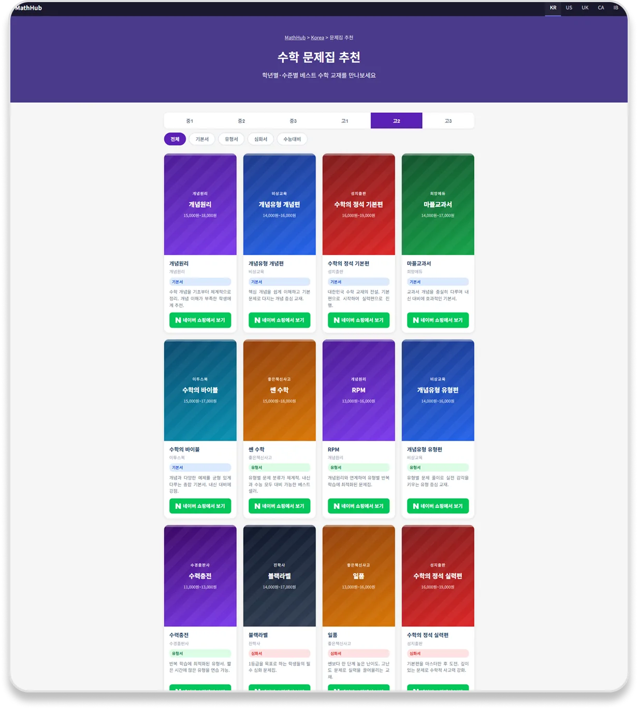
01중등 · 고등 · 대학 · 해외 과정이
한 화면에 혼합되어 사이트의
목적과 대상을 직관적으로 파악하기 어려웠습니다.
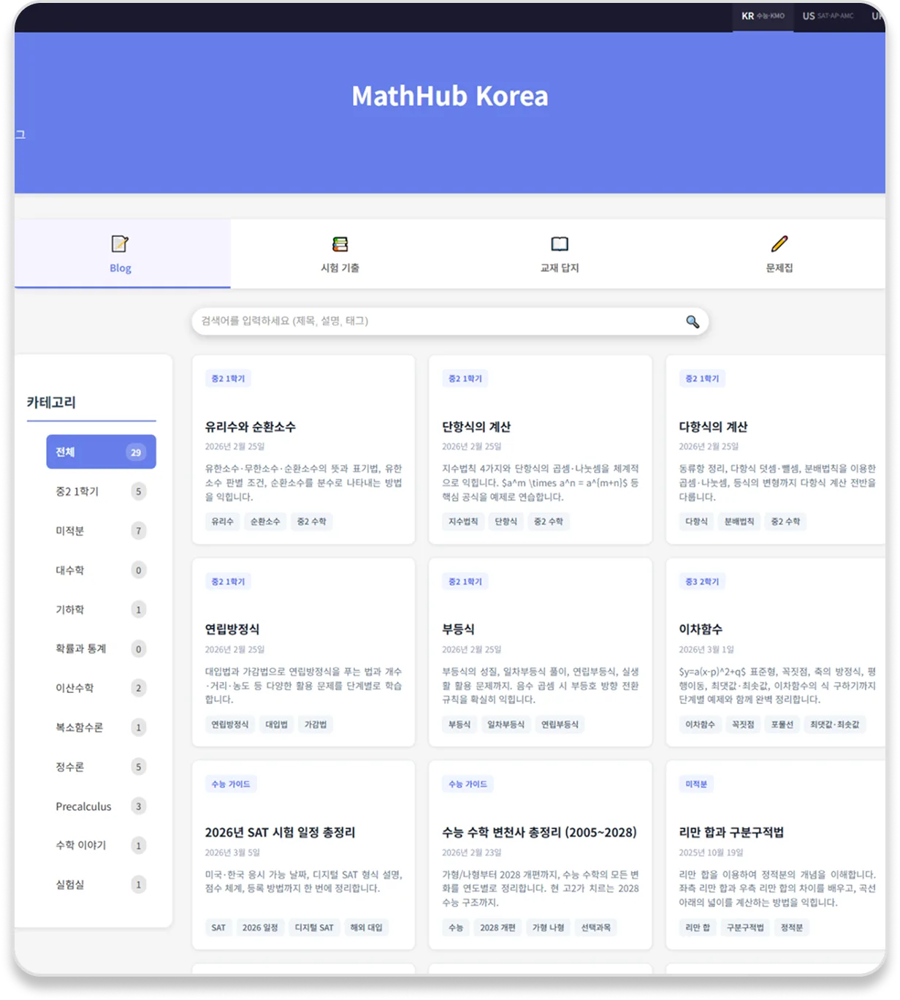
02검색과 필터 기능이 부족해
원하는 기출문제나 학습자료까지
도달하는 과정이 길었습니다.
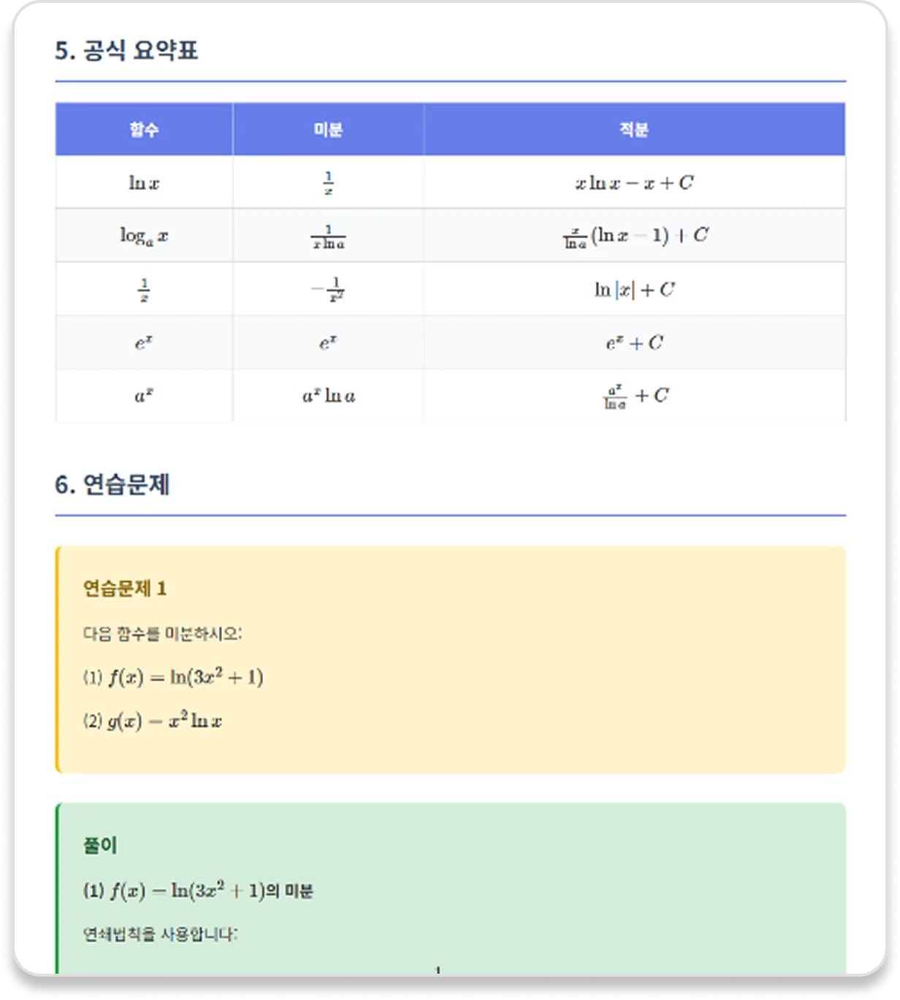
03정답 · 해설 · 등급컷 · 오답률 정보가
맥락 없이 노출되어 자료 확인 이후
실제 학습으로 이어지기 어려웠습니다.
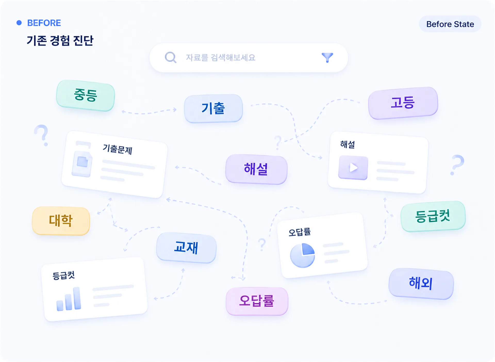
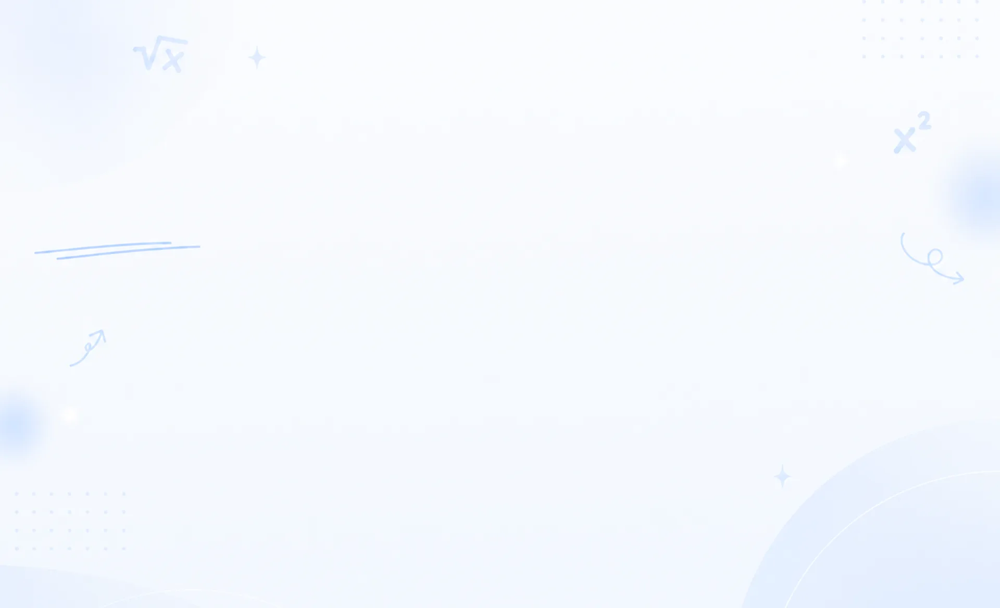
03 IA REBUILD
기존 MathHub는 자료 카드와 메뉴를 제공하고 있었지만,
사용자가 어떤 목적의 자료를 찾을 수 있는지 첫 화면에서 명확하게 판단하기 어려웠습니다.
그래서 자료를 기능 단위가 아닌 사용자의 학습 목적 기준으로 다시 나누었습니다.
모든 자료를 한 곳에 보여주는 대신
사용자의 목적에 따라
들어갈 수 있는 입구를 만들었습니다.
기존 화면은 Blog, 게시판, 과제, 학습 처럼 기능 단위의 메뉴는 있었지만,
수학 자료를 찾는 사용자의 학습 목적이 명확하게 드러나지 않았습니다.
개념 완성 / 기출 문제 / 문제집 & 해설 / 국가별 과정으로 나누어
사용자가 자신의 학습 목적에 맞는 경로를 빠르게 선택할 수 있도록 했습니다.
학습 전 필요한
개념을 정리하는 공간
연도별·시험별 기출
자료를 탐색하는 공간
교재와 해설 자료를
비교하고 선택하는 공간
SAT · AP · AMC 등
해외정보 탐색하는 공간
기존 화면은 자료 카드가 반복적으로 나열되어 있어
사용자가 원하는 자료를 직접 훑어보며 찾아야 했습니다.
리디자인에서는 검색창, 빠른 필터칩, 다중 필터를 통해
필요한 자료만 빠르게 좁혀볼 수 있도록 탐색 방식을 재설계했습니다.
자료 카드가 반복적으로 나열되어
원하는 자료를 찾기까지 시간이 오래 걸렸습니다.
첫 화면에서 바로 자료를 찾을 수 있도록
검색창을 중심에 배치했습니다.
SAT · AP · PSAT · AMC 등 자주 찾는 과정을
필터칩으로 제공해 탐색 시작 속도를 높였습니다.
시험 유형, 연도, 월, 출판사 조건을 조합해
필요한 자료만 빠르게 좁혀볼 수 있도록 했습니다.
기존 학습 페이지는 내용이 길어질수록
사용자가 현재 어떤 범위를 보고 있는지 파악하기 어려웠습니다.
리디자인에서는 왼쪽 네비바에 범위별 목차를 배치하고,
본문을 개념·예제·연습문제 단위로 나누어
긴 콘텐츠 안에서도 필요한 위치로 빠르게 이동할 수 있도록 개선했습니다.
왼쪽 네비바에서 전체 학습 범위를 확인하고,
원하는 단원으로 바로 이동할 수 있도록 했습니다.
개념, 예제, 연습문제를 범위별로 나누어
긴 내용을 끊어 읽을 수 있도록 정리했습니다.
정답은 바로 노출하지 않고 접어두어,
사용자가 먼저 풀이를 시도한 뒤
확인할 수 있도록 했습니다.
모든 자료 페이지를 같은 구조로 반복하면
각 자료가 가진 목적과 사용자의 탐색 방식이 드러나지 않는다고 판단했습니다.
기출 문제, 문제집 & 해설, 국가별 과정은
사용자가 찾는 정보의 성격이 다르기 때문에
각 페이지의 정보 우선순위와 UI 구조를 다르게 설계했습니다.
기출은 ‘많이 보여주기’보다 조건별로 빠르게 좁혀보는 것이 중요했습니다.
시험 유형, 시행월, 자료년도, 학년 기준으로 원하는 기출을 빠르게 필터링하고,
등급컷과 오답률 데이터를 함께 확인할 수 있도록 구성했습니다.
문제집은 단순 자료 제공보다, 비교하고 선택하는 흐름이 필요했습니다.
기존에는 문제집 페이지와 답지 페이지가 분리되어 있었지만, 답지 파일 직접 제공은 저작권상 부적절하다고 판단했습니다.
리디자인에서는 교재와 해설 정보를 문제집 페이지 안에 통합하고, 출판사 공식 사이트로 이동해 확인할 수 있도록 설계했습니다.
국가별 과정은 국내 학년 기준이 아니라, 해외 시험과 학습 자료 중심의 구조가 필요했습니다.
SAT · AP · AMC 등 시험 자료를 상단에 배치하고, Online Testbook을 통해 개념별 학습으로 이어지도록 구성했습니다.
하단에는 미국 수학 시험과 대학 정보 콘텐츠를 배치해 자료 탐색 이후 관련 정보까지 자연스럽게 확인할 수 있도록 했습니다.
팀원들이 각 페이지를 나누어 디자인하는 과정에서
화면마다 톤과 강조 방식이 달라지지 않도록 배경, 버튼, 강조 요소에 사용할 컬러 역할을 먼저 정리했습니다.
디자인을 실제 웹으로 옮기는 과정에서 시안 단계에서는 예상하지 못했던 구현 이슈를 마주했습니다.
필터 로직, 모션 충돌, 첫 로드 깜빡임, 반응형 레이아웃을 정리하며 정적인 디자인을 실제로 작동하는 화면으로 다듬었습니다.
필터 로직을 data-attribute 기반으로 개선
GSAP 마퀴와 ScrollTrigger 충돌 해결
FOUC 문제 개선 및 캐시버스팅 적용
반응형 스펙 통일 및 레이아웃 안정화
MathHub는 ‘자료를 모아둔 사이트’를 ‘학습을 시작하기 쉬운 플랫폼’으로 바꾸는 과정이었습니다.
이번 프로젝트를 통해 교육 플랫폼에서 중요한 것은 많은 자료를 한 화면에 보여주는 것이 아니라,
사용자가 필요한 자료를 빠르게 찾고 학습을 시작할 수 있는 구조를 만드는 것임을 배웠습니다.
ESCAPE ROOM WEBSITE
SANG
SANG
MOON
Team Project
Planning · Design · Publishing
26.05.27 - 06.05
Overview
지점별 테마를 찾기 어려웠던 기존 구조를 탐색에서 예약까지
자연스럽게 이어지는 사용자 중심 흐름으로 다시 설계했습니다.
TEAM RESEARCH
BRAND MOOD
“첫 화면이 방탈출 사이트보다
일반 소개 페이지처럼 느껴졌다.”
밝은 파스텔 톤과 정적인 구성으로 인해
상상의문이 가진 공포감과 신비감이
첫인상에서 충분히 전달되지 않았습니다.
팀원 서**
THEME FINDING
“지점마다 테마가 다른데,
메인에서 차이를 파악하기 어려웠다.”
사용자는 방문할 지점에서 가능한 테마를
먼저 확인해야 하지만, 기존 메인에서는
지점별 테마 구조가 명확하게 드러나지 않았습니다.
팀원 장**
SCROLL FATIGUE
“테마 소개 페이지가 길어서
테마를 찾기까지 계속 내려야 했다.”
테마 정보가 단순 세로 나열 방식으로 구성되어
사용자가 원하는 테마를 찾기까지
탐색 피로가 발생할 수 있다고 판단했습니다.
팀원 김**
BOOKING FLOW
“예약 버튼은 있지만, 테마 탐색에서
예약까지 이어지는 흐름은 약했다.”
테마를 확인한 뒤 바로 예약으로 이어지는
동선이 약해, 사용자의 선택이
자연스럽게 행동으로 연결되기 어려웠습니다.
팀원 정**
COMMON INSIGHT
팀원들의 의견은 결국 ‘분위기 부족’과 ‘탐색 흐름의 불편함’으로 모였습니다.
정보는 있었지만, 사용자가 상상의문을 경험하고 원하는 테마를 선택하기까지의 흐름은 부족했습니다.
이 인사이트를 바탕으로 브랜드 무드, 테마 탐색, 예약 동선을 리디자인의 핵심 개선 방향으로 설정했습니다.
상상했던 공간,
예상하지 못한 공간
익숙한 문 너머에는
당신의 상상이 만든
이야기 속 공간이 펼쳐집니다.
어딘가 낯설고,
어딘가 스산한 이곳에서
당신의 상상력은
가장 빛나는 열쇠가 됩니다.
상상의 문은
단순한 탈출이 아닌,
이야기의 주인공이 되어
직접 경험하고, 선택하며
결말을 만들어가는 곳입니다.
지금 당신만의 이야기를 시작해보세요
상상의문을 여는 순간, 이야기는 시작됩니다.
MAIN PAGE
문이 열리며,
상상의문 세계관으로 진입하는 첫 화면
THEME PAGE
지점별 필터로 원하는 테마 접근 시간 단축
카드형 레이아웃으로 핵심 정보 비교
RESERVATION PAGE
선택한 테마 정보와 예약 폼을 함께 배치
날짜·시간·인원 선택 흐름을 단계적으로 정리
당신의 상상력이
새로운 이야기를 여는
열쇠가 될 것 입니다.
TEAM PROCESS
일정과 참여도 차이를 조율하며,
작업 기준을 다시 세웠습니다
01 / ISSUE
진행 속도와 작업 기준의 차이
개인 작업 일정이 겹치면서
팀 작업에 투입되는 시간과 완성도에 차이가 생겼고,
초기 산출물의 방향도 일정하게 모이지 않았습니다.
02 / ACTION
기준을 먼저 정리하고 공유
프로젝트가 멈추지 않도록
기존 사이트 분석, 문제 정리, 레퍼런스 조사,
페이지 구조 초안을 먼저 정리했습니다.
03 / RESULT
공통 방향으로 다시 정렬
팀원 의견을 바탕으로
브랜드 무드 부족, 테마 탐색의 불편함,
예약 흐름의 약함이라는 핵심 문제를 정리했습니다.
PROPOSAL
완성된 리디자인 결과물을 바탕으로 기존 사이트의 문제, 개선 방향,
주요 화면, 기대 효과를 정리해 실제 상상의문 업장에 제안서 형태로 전달했습니다.
RESULT
이번 프로젝트를 통해 리디자인은 단순히 화면을 예쁘게 바꾸는 일이 아니라,
브랜드 경험과 사용자의 행동 흐름을 함께 설계하는 과정임을 배웠습니다.
상상의 문의 분위기를 유지하면서 사용자가 원하는 테마를 빠르게 찾고 예약까지 이어질 수 있도록,
비주얼 무드와 정보 구조의 균형이 중요하다는 점을 알게 되었습니다.
LIVE SITE
완성된 화면을 실제 웹에서 확인할 수 있도록 배포했습니다.
GITHUB
HTML, CSS, JavaScript 기반의 구현 소스를 정리했습니다.
PROPOSAL
완성된 제안서를 실제 업장에 전달했습니다.
Thank you for watching
PLEDIS Website Redesign
Personal Project · 2026.05.22 — 05.29
아티스트는 보였지만
플레디스는 보이지 않았다.
기존 사이트는 아티스트 이미지와 멀티미디어 콘텐츠를 통해
엔터테인먼트사의 기본 정보는 전달하고 있었습니다.
하지만 아티스트별 상세 정보는 개별 공식 페이지의 역할이기 때문에,
플레디스 기본 사이트에서는 회사 자체의 정체성과 무드가 더 선명하게 보여야 한다고 판단했습니다.
기존 사이트에서
발견한 문제점
아티스트와 콘텐츠는 보이지만,
회사의 정체성은 약하게 느껴졌습니다.
콘텐츠가 나열되어
시선이 머무를 지점이 부족했습니다.
메인, 회사 소개, 아티스트, 오디션이
하나의 경험으로 이어지지 않았습니다.
아티스트보다 먼저
플레디스의 인상이 남도록
기존 사이트가 아티스트와 콘텐츠를 보여주는 데 집중했다면,
리디자인에서는 그 콘텐츠를 하나의 브랜드 인상으로 연결하는 데 집중했습니다.
플레디스라는 회사가 가진 별, 음악, 무대의 이미지를
메인과 서브페이지 전반에 반복 적용해 페이지를 이동해도 같은 분위기가 이어지도록 구성했습니다.
개별 아티스트보다 플레디스의 정체성이 먼저 느껴지도록
공통 히어로와 브랜드 메시지를 강화했습니다.
플레디스의 이름이 가진 별에서 출발해 우주의 비주얼과
오렌지 포인트로 브랜드 무드를 확장했습니다.
각 페이지의 역할을 명확하게 정의해 사용자가 목적에 맞게
쉽게 탐색하고 행동할 수 있도록 구성했습니다.
Artist, MV, Album, Audition이 각각 따로 보이지 않고
자연스럽게 이어지도록 탐색 흐름으로 연결했습니다.
브랜드의 첫인상을
하나의 흐름으로 설계하기
메인페이지는 단순히 아티스트와 콘텐츠를 모아두는 화면이 아니라,
플레디스라는 브랜드를 처음 인식하는 시작점이 되도록 구성했습니다.
우주형 히어로에서 시작해 Artist, MV, Album, Audition으로 이어지는 흐름을 만들고,
사용자가 페이지를 내려가며 플레디스의 분위기와 콘텐츠를 자연스럽게 따라가도록 설계했습니다.
정지된 대표 이미지 대신 밤하늘 영상 무드를 배치해
플레디스라는 이름이 가진 별의 이미지를 먼저 전달했습니다.
개별 아티스트를 깊게 설명하기보다,
플레디스에 어떤 아티스트들이 함께 있는지 빠르게 인식하도록 배치했습니다.
MV 썸네일을 클릭하면 YouTube 영상이 팝업으로 재생되도록 구성해
페이지를 벗어나지 않고 음악과 퍼포먼스를 바로 경험할 수 있게 했습니다.
클릭할 때마다 다른 앨범으로 전환되도록 구성해
정적인 앨범 목록보다 가볍게 둘러보는 재미를 더했습니다.
사이트의 마지막 흐름을 오디션으로 연결해
플레디스가 새로운 가능성을 찾는 회사라는 인상을 남겼습니다.
같은 무드 안에서,
각 페이지의 역할은 더 선명하게
같은 브랜드 톤은 유지하되, Company · Artist · Notice · Audition이
각자 다른 목적을 가진 페이지로 읽히도록 정리했습니다.
01COMPANY
기존 페이지는 설명문, CI, 지도 중심이었습니다.
리디자인에서는 Pleiades에서 출발한 브랜드 의미, CI, 연혁을 나누어
플레디스라는 회사의 정체성이 더 잘 읽히도록 정리했습니다.
02ARTIST
기존 페이지는 과거 아티스트부터 나열되어
현재 플레디스의 인상이 바로 드러나기 어려웠습니다.
리디자인에서는 현재 활동 중인 주요 아티스트를 먼저 보여주어
플레디스의 지금을 더 빠르게 인식할 수 있도록 구성했습니다.
03NOTICE
기존 페이지는 공지가 표 형태로 길게 나열되어
정보의 성격을 구분하기 어려웠습니다.
리디자인에서는 카테고리 탭과 라벨을 적용해
공지사항, 아티스트 스케줄 등을 한눈에 구분할 수 있도록 정리했습니다.
04AUDITION
텍스트 안내 중심이던 기존 구성을
지원 분야, 절차, FAQ, 지원 폼 순서로 정리해
사용자가 자연스럽게 지원까지 이어지도록 만들었습니다
AI로 무드를 만들고,
코드로 웹 경험에 연결하기
Midjourney는 플레디스의 별, 빛, 무대 이미지를 빠르게 시각화하는 데 활용했고,
Claude Code는 구현 중 필요한 코드 구조와 오류 해결을 점검하는 보조 도구로 사용했습니다.
AI가 만든 결과물을 그대로 사용하기보다,
브랜드 방향에 맞게 선택하고 다듬어 실제 웹 안에서 작동하도록 구현했습니다.
01MIDJOURNEY PROMPT
별, 빛, 무대, 음악의 이미지를 바탕으로 히어로 비주얼을 생성하고,
이를 영상 무드로 확장해 몰입감 있는 진입 장면을 만들었습니다.
cosmic night sky, glowing star stage,
K-pop agency mood, soft orange light,
cinematic, dreamy, wide hero visual
slow camera movement, stars gently moving,
light particles flowing, cinematic motion, seamless loop
02CLAUDE CODE WORKFLOW
Figma에서 설계한 화면 구조와 인터랙션 방향을 바탕으로,
Claude Code를 활용해 HTML, CSS, JavaScript로 구현했습니다.
HTML · CSS · JavaScript로 5개 페이지, 반응형 레이아웃,
슬라이더, 다국어 전환, 영상 자동재생 기능을 구성했습니다.
화면의 역할을 나누는 것만큼 중요했던 건,
그 화면들이 실제 웹에서 자연스럽게 작동하도록 만드는 일이었습니다.
완성도를 가른 건
눈에 잘 안 보이는 오류였다
06 TROUBLE & SOLUTION모바일 환경에서 히어로 영상이 자동재생되지 않아
첫 진입 경험이 끊기는 문제가 있었습니다.
video 태그에 muted, playsinline, loop를 적용해
모바일에서도 영상이 바로 재생되도록 수정
MV 카드에 hover 했을 때 의도보다 넓은 영역이
반응해 슬라이더 흐름이 멈추는 문제가 있었습니다.
이벤트 영역을 카드 단위로 분리해 사용자가
보고 있는 카드에서만 hover가 작동하도록 수정
언어를 변경하면 화면 위치가 위로 이동해
페이지 흐름이 끊기는 문제가 있었습니다.
전환 전 스크롤 위치를 저장하고
언어 변경 후 동일 위치로 복원되도록 구현
아티스트를 넘어,
플레디스라는 브랜드가 보이도록
이번 리디자인은 아티스트를 더 많이 설명하는 작업이 아니라,
아티스트들을 하나로 묶는 플레디스라는 브랜드의 인상이
사이트 전체에서 더 선명하게 느껴지도록 만드는 작업이었습니다.
메인, Company, Artist, Notice, Audition의 역할을 다시 정리하고,
영상 히어로와 인터랙션, 다국어 전환을 적용해
정적인 정보 페이지를 더 생동감 있는 브랜드 웹 경험으로 재구성했습니다.
PROJECT OVERVIEW
이 프로젝트는 음악 프로덕션 셰어하우스라는 세계관을 바탕으로,
웹 랜딩페이지와 실제 플레이 가능한 비주얼노벨 게임을 함께 제작한 작업입니다.
랜딩페이지는 게임의 분위기와 캐릭터를 소개하는 진입점으로,
게임 페이지는 선택지 · 호감도 · 루트 분기 · 멀티엔딩이 작동하는 인터랙티브 경험으로 설계했습니다.
TYPE
인터랙티브 비주얼노벨
게임 + 랜딩페이지
ROLE
기획 · 시나리오 설계
UI 디자인 · 프론트 구현
TECH
HTML / CSS / GSAP
CLAUDE CODE
GOAL
소개에서 끝나지 않고,
플레이되는 웹 경험 구현
NOW PLAYING
TRACK 1
플레이리스트 :
우리 사이의 음표
CONCEPT
음악 프로덕션 셰어하우스에서 만난 6명의 캐릭터.
플레이어의 선택은 캐릭터와의 관계를 바꾸고, 그 관계는 각기 다른 루트와 엔딩으로 이어집니다.
각 장면은 하나의 트랙처럼 쌓이고, 사용자는 자신만의 플레이리스트를 완성하게 됩니다.
POINT 01
음악 프로덕션 셰어하우스
신인 A&R 콘텐츠 어시스턴트가
6명의 캐릭터와 함께 생활하며
데뷔 앨범을 준비하는 이야기
POINT 02
선택으로 달라지는 관계
대화 선택지는 캐릭터별 호감도에 반영되고,
누구와 가까워졌는지에 따라
전용 루트로 이어집니다.
POINT 03
관계에 따라 달라지는 결말
캐릭터 루트와 선택 누적에 따라
해피 엔딩, 노멀 엔딩, 솔로 엔딩으로 분기
LANDING DESIGN
랜딩페이지는 게임의 분위기와 캐릭터를 미리 보여주는 진입점으로 설계했습니다.
LP, 필름, 캐릭터 스티커, 핑크 포인트 컬러를 활용해 음악과 비주얼노벨의 무드를 직관적으로 전달하고,
사용자가 자연스럽게 ‘지금 재생하기’ 버튼을 눌러 게임 플레이로 이어지도록 구성했습니다.
HERO VISUAL
LP와 6명의 캐릭터를 첫 화면에 배치해
음악 셰어하우스 비주얼노벨이라는 콘셉트를 가장 먼저 전달했습니다.
STORY PREVIEW
플레이 전 세계관을 이해할 수 있는 정도만 정보량을 최소화했습니다.
CHARACTER PREVIEW
주요 인물을 한 화면에서 확인할 수 있도록 구성했습니다.
사용자가 각 캐릭터의 역할과 분위기를 미리 파악하고,
관계와 루트에 대한 기대감을 가질 수 있도록 했습니다.
STILL CUT PREVIEW
실제 게임에서 만날 수 있는 장면을 미리 보여주는 구간입니다.
무대, 캐릭터, 분위기 컷을 함께 배치해
플레이 전 몰입감을 높일 수 있도록 구성했습니다.
GAME SYSTEM
게임은 공통 루트에서 시작해, 플레이어의 선택에 따라 캐릭터별 호감도가 누적됩니다.
가장 높은 호감도를 가진 캐릭터의 전용 루트로 분기되고,
이후 선택 누적에 따라 해피 엔딩, 노멀 엔딩, 솔로 엔딩으로 이어지도록 설계했습니다.
한서아
♥♥♥♥♥정이안
♥♥♥♥♥오다은
♥♥♥♥♥KAEL
♥♥♥♥♥윤재호
♥♥♥♥♥최준혁
♥♥♥♥♥IMPLEMENTATION STRUCTURE
게임의 시나리오는 Ink 스크립트로 작성하고, 화면 출력과 연출은 JavaScript 엔진이 처리하도록 구조를 분리했습니다.
대사, 선택지, 배경, 캐릭터, CG, 효과는 스크립트 안의 태그로 관리하고, 게임 엔진은 해당 태그를 해석해 화면 요소를 동적으로 출력합니다.
이를 통해 시나리오를 수정하거나 장면을 추가할 때 전체 코드를 다시 작성하지 않아도 되는 구조를 만들었습니다.
INK SCRIPT
대사, 선택지, 루트 분기, 변수 조건을 Ink 스크립트로 작성해
시나리오 구조를 코드에서 분리했습니다.
TAG BASED DIRECTION
배경, 캐릭터, CG, 사운드, 효과를 태그로 지정하고
JavaScript 엔진이 해석하여 화면에 반영하도록 구성했습니다.
JS GAME ENGINE
inkjs로 스토리를 실행하고,
JavaScript 엔진이 현재 장면에 맞는 UI, 대사창, 선택지,
캐릭터와 배경을 동적으로 렌더링합니다.
SAVE & STATE
localStorage를 활용해 세이브, 설정, 수집 요소,
본 엔딩 기록이 유지되도록 구성했습니다.
Game Output
실제 게임 플레이 화면
Tag Example
Ink + Direction Tags
AFFECTION & SAVE
호감도와 저장 상태를 확인
NARRATIVE DESIGN
캐릭터별 장면이 흩어져 보이지 않도록,
주인공의 6개월 계약 기간과 한서아 데뷔 앨범의 마감을 이야기의 중심 축으로 설정했습니다.
공통 루트의 선택과 복선이 후반 캐릭터 루트에서 회수되도록 설계해, 멀티루트 구조 안에서도 하나의 큰 흐름이 유지되도록 만들었습니다.
한서아
역전형
늘 거리를 두던 신인 가수가
먼저 불안과 진심을 드러내고,
주인공을 붙잡는 구조
정이안
직면형
완벽주의 프로듀서가
자기 회피와 상처를 직면하고
인정하며 주인공과 가까워지는 구조
오다은
축적형
모두를 챙기던 매니저가
가장 오래 외로웠다는 감정을
드러내고 주인공과 이어지는 구조
KAEL
대결형
개인적인 곡과 소속사와의 충돌
관심없는 척 하는 인기가수가
가면 뒤의 진짜 자기 모습을 보여주는 구조
윤재호
정중형
말보다 음악으로 감정을 전하며
작은 복선이 쌓여
마침내 드러나는 구조
최준혁
정체해제형
모두에게 친절한 집주인의 이유
잠긴 방, 떠난 사람, 멈춘 시계가
다시 움직이며 진심을 드러내는 구조
TROUBLESHOOTING
비주얼노벨은 화면을 예쁘게 구성하는 것뿐 아니라, 선택지, 세이브, 루트 분기, 엔딩 조건이 끝까지 안정적으로 작동해야 했습니다.
제작 과정에서는 분기 도달 여부, 기존 세이브 충돌, 선택지 UI 오류, 사운드 자산 부족 등
실제 플레이 과정에서 발생할 수 있는 문제를 테스트하며 개선했습니다.
ISSUE 01
도달 불가능한 루트와 엔딩
문제호감도 기준이 실제 플레이 흐름과 맞지 않아
특정 루트 진입이 어려웠습니다.
inkjs 헤드리스 시뮬레이션으로
플레이 패턴별 자동 검증을 진행했습니다.
루트 진입과 엔딩 기준을 재조정해
모든 루트가 엔딩까지 이어지도록 개선했습니다.
ISSUE 02
구조 변경 후 세이브 충돌 위험
문제스토리 구조 수정 후 기존 세이브 데이터와
새 스토리 구조가 충돌할 위험이 있었습니다.
storyV 버전 가드와 LoadJson try/catch,
안전 폴백 처리를 추가했습니다.
잘못된 세이브 데이터로 인한
크래시를 방지할 수 있었습니다.
ISSUE 03
음악 게임인데 음원이 없는 문제
문제음악을 주요 소재로 삼았지만
별도로 사용할 수 있는 음원 자산이 없었습니다.
Web Audio API를 활용해 별도 음원 파일 없이
장면별 배경음을 코드로 생성했습니다.
음원 파일 없이도 장면별 분위기를 만들고
게임의 몰입감을 높일 수 있었습니다.
플레이리스트 : 우리 사이의 음표는 게임의 분위기를 소개하는 랜딩페이지에서 시작해
선택지, 호감도, 루트 분기, 세이브, 멀티엔딩이 작동하는 비주얼노벨 게임으로 이어지는 프로젝트입니다.
이번 프로젝트를 통해 비주얼노벨에서 중요한 것은 장면을 많이 보여주는 것이 아니라,
사용자의 선택이 관계를 바꾸고 그 관계가 다시 루트와 엔딩으로 이어지는 구조를 설계하는 것임을 배웠습니다.